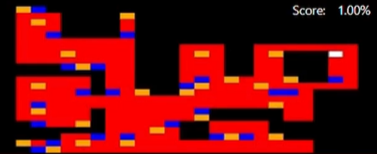
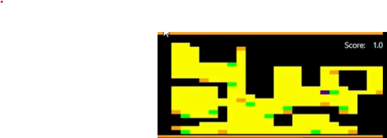

ROOMBA - LOCALICE VACUUM CLEANER
Silvia Calvo Cabello
Silvia Calvo Cabello
El objetivo de esta práctica es desarrollar un programa que permita a un robot aspirador (similar a una Roomba) limpiar la mayor superficie posible de una vivienda de manera eficiente, empleando el algoritmo de cobertura BSA (Backtracking Spiral Algorithm).
Además, se implementan métodos de búsqueda y planificación como el BFS (Breadth-First Search) para resolver problemas de navegación y retorno, así como un sistema de transformación entre coordenadas del mapa y píxeles para visualizar el recorrido en el entorno simulado.
El BSA es un algoritmo de cobertura diseñado para que un robot recorra sistemáticamente un área mientras evita obstáculos y minimiza la repetición de zonas ya visitadas.
El robot avanza en una dirección principal (por ejemplo, norte) mientras el camino esté libre. Cuando encuentra un obstáculo o una celda visitada, gira siguiendo un orden de prioridad (este, sur, oeste, etc.) para continuar el recorrido. Si queda atrapado o sin celdas libres, utiliza un mecanismo de backtracking para retroceder a la última posición con opciones de movimiento disponibles.
De esta manera, el algoritmo garantiza que se cubra el máximo espacio posible sin depender de un mapa previo completamente conocido.
El BFS o búsqueda en anchura es un algoritmo de búsqueda en grafos que explora las celdas del mapa por niveles, garantizando encontrar el camino más corto hasta el objetivo.
En este proyecto, se utiliza principalmente para localizar la celda libre más cercana cuando el robot necesita volver a un punto de retorno o escapar de una situación donde el BSA se ha estancado.
De esta manera, el BFS complementa al BSA, proporcionando un mecanismo eficiente para reconducir el robot a zonas no exploradas.
Para traducir las coordenadas del mapa físico a la representación en píxeles, envié al robot a distintos puntos de referencia (esquinas y zonas intermedias) y registré sus coordenadas. Posteriormente, localicé los píxeles correspondientes en la imagen del mapa.
Con estos pares de puntos, calculé la matriz de transformación entre ambos sistemas mediante el método de mínimos cuadrados.
El código se organiza en dos funciones: una que genera la matriz de transformación y otra que aplica dicha matriz a cualquier punto, lo que permite transformar coordenadas de un sistema a otro o viceversa de manera flexible y reutilizable.
A lo largo del proyecto se realizaron diferentes versiones del algoritmo, ajustando su comportamiento hasta conseguir una cobertura completa y eficiente del entorno.
ALGORITMO Nº1 - PRIMERA APROXIMACIÓN
En la primera versión, se intentó crear un mapa en rejilla en Unibotics. Inicialmente hubo dificultades para representar las celdas y convertir las posiciones del robot en píxeles.En esta etapa, el BSA no estaba completamente implementado: el robot avanzaba sin control de dirección estable y no resolvía bien los puntos críticos. El cálculo de retorno se hacía mediante la distancia Manhattan, pero esta no consideraba los obstáculos ni las celdas ya visitadas, provocando bloqueos frecuentes.
ALGORITMO Nº2 - MEJORA DEL CONTROL
En la segunda versión se mejoró el control de movimiento mediante un controlador PID. Primero, el robot giraba hasta orientarse hacia el objetivo y luego avanzaba, pero esto generaba inestabilidad si el ángulo de error era grande.Se implementó una condición para evitar movimiento lineal cuando el ángulo de error superaba los 10°, lo que permitió giros más suaves y evitó colisiones con paredes. Esta mejora estabilizó el comportamiento del robot en entornos estrechos.
ALGORITMO V1
En esta versión el algoritmo ya era funcional. Se sustituyó la distancia Manhattan por el BFS para calcular los puntos de retorno de forma más precisa.El robot mantenía su dirección mientras no encontrase obstáculos ni celdas visitadas, generando varios puntos críticos y de retorno. También se implementó un estado de “choque” que permitía retroceder brevemente en caso de impacto y reintentar una nueva dirección.

ALGORITMO V2
En esta versión se optimizó el comportamiento del BSA: el robot prioriza moverse siempre que sea posible en su dirección primaria (por ejemplo, norte), y solo cambia a direcciones secundarias cuando no puede avanzar.Esto redujo el número de puntos de retorno y mejoró la eficiencia del recorrido. El resultado fue una cobertura más fluida y menos redundante.

ALGORITMO V3
En esta versión se cambió el regristro del mapa ya que antes las delcillas se hcaian con un tamaño de 40 pixeles pero era necesario bajarlo a un tamaño menor del robot por loq ue se puso en 32. de esta manera no quedaban huecos vacíospor el recorrido.Esto hace que tenga masceldillas y lo hace más lento.
Las dos versiones finales muestran un comportamiento similar en tiempo total (entre 8 y 9 minutos para recorrer toda la casa), aunque difieren en el número de puntos de retorno.
La Versión 1 tiene más puntos de retorno y revisita algunas zonas, mientras que la Versión 2 optimiza el recorrido con menos interrupciones. En ambas versiones, el robot consigue cubrir la totalidad del área en un tiempo parecido (8-9 min).
- VIDEO DE MUESTRA En los siguientes videos (reproducido a velocidad x2) puede verse la ejecución del robot en Gazebo junto con la visualización de las zonas recorridas de.
Ver el video V1
Ver el video V2